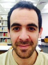
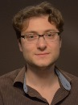
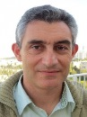

מכון מנדל מברך את ארבעת העמיתים החדשים של מחזור ה' בתכנית מנדל לדוקטורנטים מצטיינים בחינוך: עקיבא המאירי, אלי וינוקור, יוליה ליפשיץ-ברזילר ואליק פלטניק.
עקיבא המאירי לומד לתואר שלישי במרכז מלטון לחינוך יהודי בחוג לחינוך של האוניברסיטה העברית בירושלים. לעקיבא תואר ראשון במקרא ולימודי יהדות ותואר שני בחינוך יהודי, שניהם מהאוניברסיטה העברית. מחקרו עוסק בנושא "עיון בעיצוב דמויותיהם של עשו וציפורה בסיפור המקראי ובמדרשי חז"ל כפתח לבירור היחס התרבותי אל הזר והשלכותיו האפשריות של יחס זה על החינוך היהודי". את העבודה מדריכים פרופ' מנחם הירשמן מהחוג לחינוך יהודי ופרופ' ישראל קנהל מהחוג למקרא. עקיבא מלמד מקרא ומרכז את מגמת מחשבת ישראל בבית הספר יגאל אלון בראשל"צ, ומשמש מטעם קרן פוזן מדריך של בני נוער העוסקים יחד בשאלות של זהות ויחס לזרים במקורות היהדות. עקיבא הוא גם תלמיד חבר בקבוצת מחקר של מכון "שחרית" העוסקת בדמותה של החברה הליברלית וה"רב-תרבותית" בישראל.
אלי וינוקור הוא סטודנט לתואר שלישי בפקולטה לחינוך באוניברסיטת חיפה. לאלי תואר שני בתרבות עברית, תואר ראשון בפילוסופיה יהודית ובהיסטוריה של עם ישראל, וכן תעודת הוראה במחשבת ישראל – כולם מאוניברסיטת תל-אביב. עבודת הדוקטורט של אלי, בהנחיית פרופ' חנן אלכסנדר, עוסקת בנושא "חינוך לאזרחות קוסמופוליטית – סתירה מבנית או סינתזה הכרחית?"
 יוליה ליפשיץ-ברזילר היא סטודנטית לתואר שלישי בביה"ס לחינוך באוניברסיטה העברית בירושלים, ועמיתת תכנית הופמן לטיפוח מנהיגות ואחריות חברתית. ליוליה תואר ראשון ותואר שני בחינוך וייעוץ חינוכי מהאוניברסיטה העברית בירושלים. עבודת הדוקטורט שלה, בהנחייתם של פרופ' איתמר גתי ופרופ' משה טטר, עוסקת בחקר "דרכי התמודדות עם קשיים בקבלת החלטות בבחירת תחום לימודים ומקצוע". בשנתיים האחרונות יוליה מתנדבת במכון לחקר טיפוח בחינוך – מכון מחקר שהוקם במטרה להפעיל תכניות ניסוי חדשניות בתחום טיפוחן החינוכי של אוכלוסיות מוחלשות בישראל. כמו כן היא משתתפת בתכנית לקידום דו-קיום ערבי-יהודי בבתי הספר בירושלים.
יוליה ליפשיץ-ברזילר היא סטודנטית לתואר שלישי בביה"ס לחינוך באוניברסיטה העברית בירושלים, ועמיתת תכנית הופמן לטיפוח מנהיגות ואחריות חברתית. ליוליה תואר ראשון ותואר שני בחינוך וייעוץ חינוכי מהאוניברסיטה העברית בירושלים. עבודת הדוקטורט שלה, בהנחייתם של פרופ' איתמר גתי ופרופ' משה טטר, עוסקת בחקר "דרכי התמודדות עם קשיים בקבלת החלטות בבחירת תחום לימודים ומקצוע". בשנתיים האחרונות יוליה מתנדבת במכון לחקר טיפוח בחינוך – מכון מחקר שהוקם במטרה להפעיל תכניות ניסוי חדשניות בתחום טיפוחן החינוכי של אוכלוסיות מוחלשות בישראל. כמו כן היא משתתפת בתכנית לקידום דו-קיום ערבי-יהודי בבתי הספר בירושלים.
אליק פלטניק לומד לתואר שלישי בטכניון, במחלקה לחינוך למדע וטכנולוגיה. לאליק תואר שני בהוראת מתמטיקה מאוניברסיטת תל אביב ותואר ראשון במתמטיקה מאוניברסיטת חיפה. עבודת הדוקטורט שלו, "למידת מתמטיקה באמצעות פרויקטים מחקריים", בהנחיית פרופ' בוריס קויצ'ו, עוסקת באפשרויות קוגניטיביות, רגשיות וחברתיות בפרויקטים של חקר מתמטי. אליק מלמד מתמטיקה זה יותר מעשר שנים במכללה הטכנולוגית של חיל האוויר בחיפה. הוא הקים וריכז את פעילות מסלול המצוינות של בית הספר הטכני של חיל האוויר.
-
-
הוא סטודנט לתואר שלישי בפקולטה לחינוך באוניברסיטת חיפה. לאלי תואר שני בתרבות עברית, תואר ראשון בפילוסופיה יהודית ובהיסטוריה של עם ישראל, וכן תעודת הוראה במחשבת ישראל – כולם מאוניברסיטת תל-אביב. עבודת הדוקטורט של אלי, בהנחיית פרופ' חנן אלכסנדר, עוסקת בנושא "חינוך לאזרחות קוסמופוליטית – סתירה מבנית או סינתזה הכרחית?" -
-
{kind=link}
{kind=link}
{kind=link}